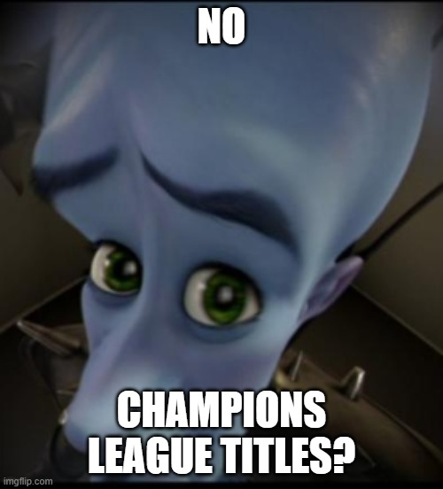
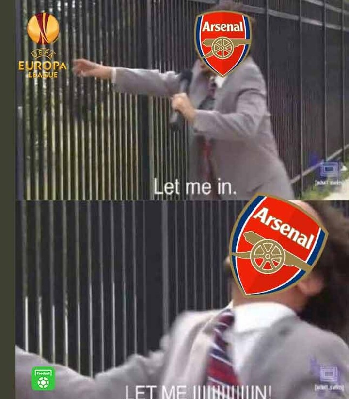
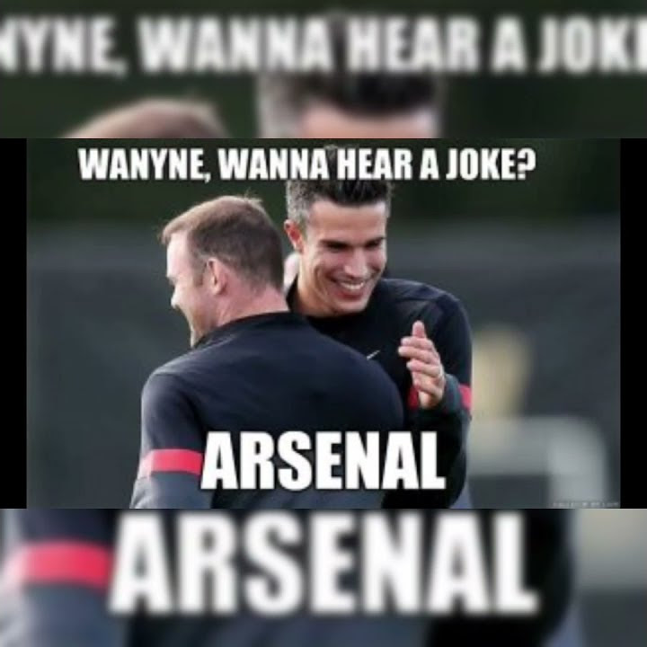
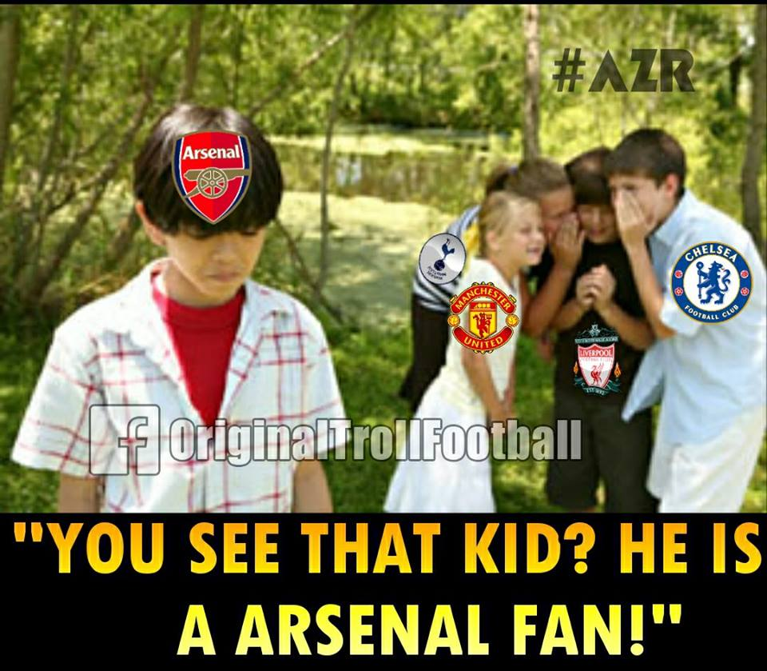
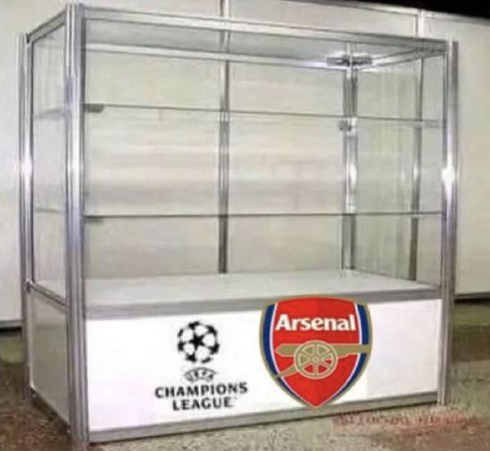
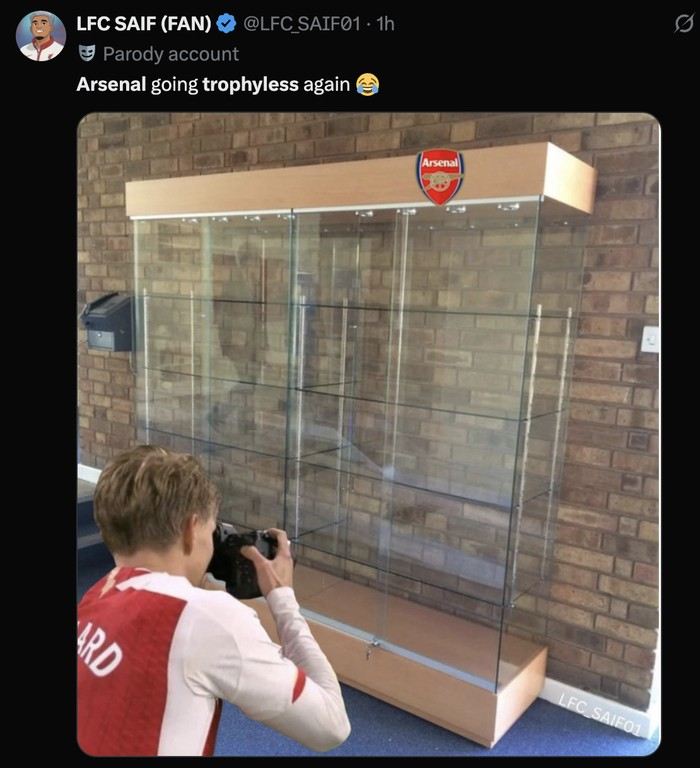

yall buns







- Manchester City 6-3 Arsenal (December 14, 2013)
- Manchester United 6-1 Arsenal (February 25, 2001)
- Chelsea 6-0 Arsenal (March 22, 2014)
- West Ham United 6-0 Arsenal (Nov 5, 1960)
- Leicester City 7-2 Arsenal (Aug 31, 1963)
(all jokes, no hard feelings)